Refining the Transformer
June 25, 2026 · CME295, Lecture 2
00:00:00–00:09:30 · Recap
Attention Map tries to represent the value of each dot product of Query and Key, to show the relative importance of words in a sentence.
Suggested — read Attention Is All You Need.
00:09:30 · Position embeddings
In a transformer, because we look at each word surrounding a particular token, direct links lose the positional information that was present in sequential RNNs. Hence the idea is to add a learned, position-specific embedding to each token vector.
Note — the positional embeddings are learnt.
There is also a way of hardcoding position embeddings. It's predetermined via a formula. The authors chose a formulation based on sines and cosines in the OG paper. For every index, compute the corresponding values from the formulae in the paper.
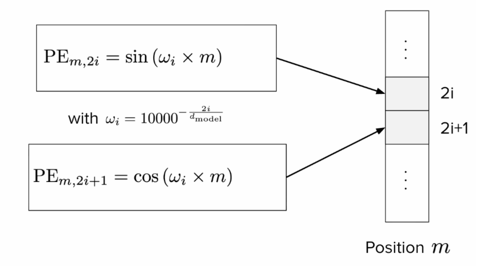
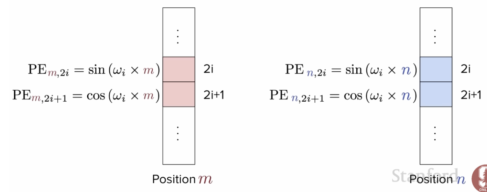
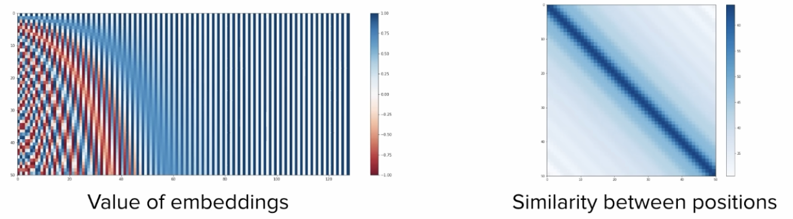
Core idea — words that are closer together are likely to be more relevant.
Benefits — this can extend to any sequence length.
In 2025, this is still being used… kind of.
From Absolute to Relative Positional Information
Within the attention layer, we care about relative position. Hence the idea is to change the attention layer instead. This can be done by tweaking the attention formula: add a bias to the query-key scores inside the softmax. "Some tokens are supposed to be more similar compared to others."
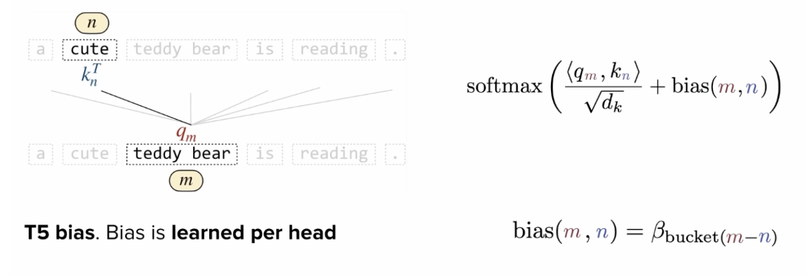
The T5 paper introduces this by learning the bias term per head. Bucketize all the "m − n" quantities into some buckets, and have the model learn these quantities, which are then injected into the softmax.
There are other methods. ALiBi — from the "train short, test long" paper — where the bias is linear, deterministic and not bounded, so they got a formula for it. (ALiBi = Attention with Linear Biases.)
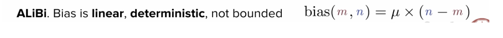
Today, most models use rotation of the query and key vectors by some angle, with a rotation matrix.
00:37:30 · RoPE — Rotary Position Embeddings
The idea is to rotate the query and key vectors with a rotation matrix.
As |m − n| becomes large, the relative upper bound of the attention value decays, which solves the problem of nearer tokens having more weight in attention.
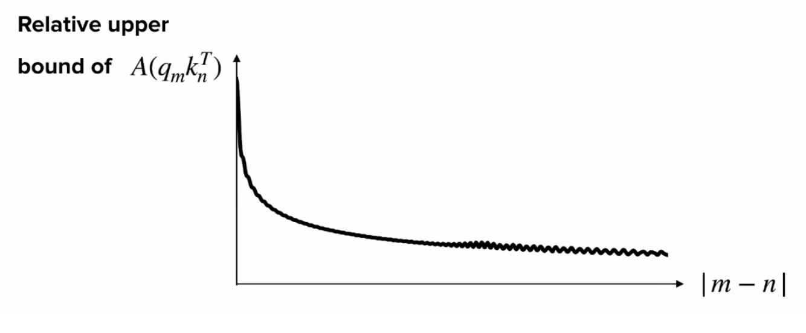
00:44:30 · Layer Normalization
This helps with training stability and was used in the OG paper. It basically requires the model to learn parameters — γ (gamma) and β (beta):
LN(x) = γ · x̂ + β, with x̂ = (x − μ) / √(σ² + ε), μ = (1/d) Σi=1d xi, σ² = (1/d) Σi=1d (xi − μ)²
This helps with stability and convergence time.
In today's time, there are different kinds of layer normalization. There is Post-Norm and Pre-Norm normalization.
In Post-Norm, the output = LayerNorm(x + SubLayer(x)), and it's done after the residual connection.
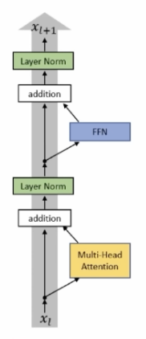
In Pre-Norm, the output = x + SubLayer(LayerNorm(x)), and it's done before the residual connection.
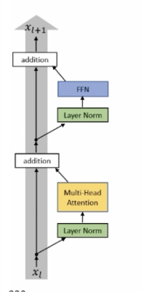
Nowadays, people use RMSNorm (Root Mean Square Norm), typically as Pre-Norm + RMSNorm:
γ · x̂ + β → γ · x / RMS(x) (so only γ is learnt)
Intuition behind normalising → sometimes the activation has extreme values in some part or another, and if they vary too much, the model has trouble learning. Hence normalising helps by bringing the components of the activation to a range that isn't too far off in some direction. Internal Covariate Shift is the name of this phenomenon.
Difference between Batch Normalization & RMSNorm → BN is normalization across the other dimensions of the batch. Batch norm depends on the batch and can introduce some differences between training and inference.
00:50:40 · Attention Approximation
Longformer (2020) → long-document transformer → restricting the window to let each token interact only with its neighbourhood, and not every other token.
Some clever tricks like tiling are used here. They do not involve the entire operation of computing attention — softmax(QKT/√d).
The problem with normal attention is that it is O(n²), which is basically the term all computer-science nerds are terrified of.
This is called SWA → Sliding Window Attention. People have local attention in some layers and global attention in others. Variations include interleaving local and global attention layers, and optimizing performance. Example: Mistral 7B has SWA. It's similar to the receptive field in computer vision.
Idea — don't have one projection matrix per head; share them across heads. To share attention heads, the basic idea is to share key/value heads within a group of queries.
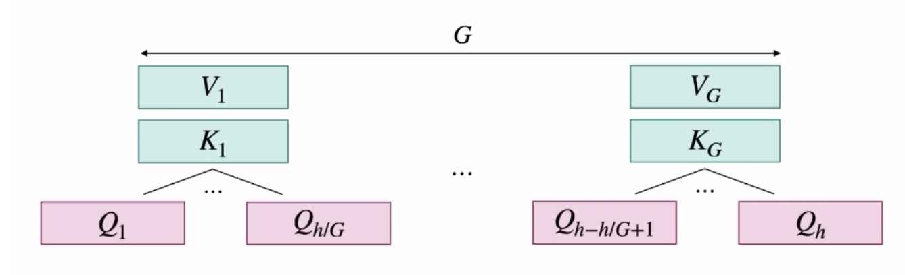
Keys and Values are usually grouped, but not the Query. Intuitively, the query is basically wondering whether something is similar to something else. Another reason: when you decode, you perform attention between the current word and all the words before it. The Keys and Values come up again and again via the KV Cache, which saves the values of the Keys and Values. We don't want it to become too big, hence we share projection matrices across heads.
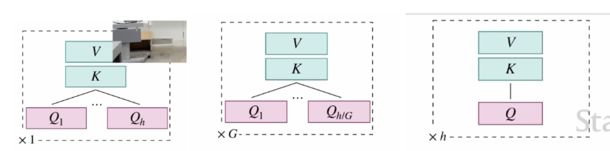
- G = 1 → Multi-Query Attention (MQA). All h heads share the same projection matrices for V and K.
- 1 < G < h → Group-Query Attention (GQA). We share g projection matrices for V and K, and there are groups of size h over g.
- G = h → Multi-Head Attention (MHA). Every head has its own query, key and value projection matrices.
Question — do we apply this to self-attention and cross-attention? → In today's models, we usually care about what is in the decoder and not the encoder. This typically comes into play for the masked self-attention in the decoder, but can be applied anywhere. Since we don't care a lot about the encoder (modern LLMs are decoder-only), we don't really use it in the encoder.
Question — how do you know which one to use? → Depends on how well it performs, latency, costs, how big the model is, how much you want to save on compute, how long your input is (short or long), etc. Most models usually have GQA.
01:03:00 · Architectures of modern Transformers
The most popular one is the encoder-decoder text-to-text transformer (T5, mT5 (multilingual), ByT5 (a tokenizer-free method operating at the byte level, with a smaller vocabulary size — 28; every character is 2 bytes)).
The OG transformer did next-token prediction for the training task, but the T5 family operated on the span-corruption task.
Span Corruption → one or multiple tokens are blanked or missing in the sentence that is input to the encoder. N is the number of spans that are corrupted. The T5 family called them sentinel tokens — each represents a span of corrupted tokens. The decoder's job is to find each of the spans in series.
A teacher-forcing mechanism is used for training such models (input everything to the decoder and try to reconstruct everything at once).
Another architecture is Encoder-Only → the projection of an embedding for class prediction (e.g. sentiment extraction). Examples are BERT, DistilBERT and RoBERTa.
The final one is Decoder-only, which is essentially text-to-text. Examples are the GPT series.
01:11:30 · BERT Deep Dive
BERT → Bidirectional Encoder Representations from Transformers.
Why is this bidirectionality remarkable → from a given input, we are able to get output representations that have attended to everything, for each token. This is in contrast with MSA (Masked Self-Attention), which is not bidirectional but rather causal, as the mask makes every token attend to itself and every token before it. GPT is not truly bidirectional.
ELMo → Embeddings from Language Models: a bidirectional LSTM where you had multiple layers stacked on top of each other to build a bidirectional representation for each word. It was hard to scale because of its similarity to previous models, due to recurrence.
ELMo & BERT are Sesame Street characters, haha.
01:16:05 · BERT & Encoder-only models
We keep only encoders and leverage the encoded embeddings.
- CLS → classification placeholder, which carries bidirectional information for the whole input.
- SEP → separator token, which aims at separating 2 sentences.
The strategy for training is multi-staged for these types of models:
- Step 1: pretraining with proxy tasks (MLM — Masked Language Model, & NSP — Next Sentence Prediction).
- Step 2: finetuning for a given end task.
Pros — finetuning does not need a lot of data and has good performance (sometimes exceeding SOTA).
Cons — it is not suited for a range of tasks (e.g. text generation), and fine-tuning is a required step.
Variants — RoBERTa, DistilBERT, ALBERT.
01:22:27 · BERT Architecture
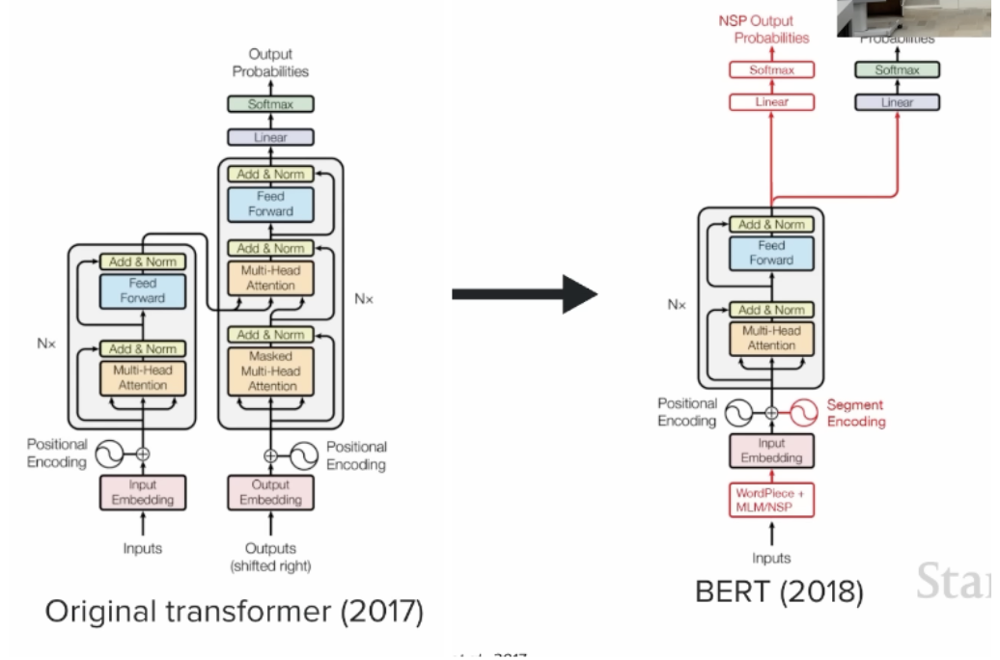
BERT used a specific tokenizer called WordPiece, which is trained on a training set beforehand, with a vocabulary size of 30,000, and is great at detecting common particles.
For the processing of NLP and MLM tasks:
- We add the [CLS] token at the beginning of the input.
- We separate consecutive segments with the [SEP] token, and put another one at the end.
- We use a [MASK] to mask the inputs.
The input embedding is a gigantic lookup table that learns an embedding for each word of the vocabulary. There is also a positional embedding here, which helps the network associate tokens with their position. The authors of the BERT paper used a hardcoded positional embedding — encodings are either learned or fixed with cosines and sines.
The new idea here is the Segment Encoding, which is essentially a shared embedding for a segment. It was supposed to help with the NSP task, because it had features that could represent which sentence precedes the other, but it has been challenged publicly.
Does every token in the same sentence have the same segment encoding? The answer is yes.
Encoder-only model — take the encoder part of the original transformers paper, and we have three sets of goals:
- Represent input data with the features needed for NLP tasks.
- Leverage the transformer's self-attention mechanism.
- Use learned embeddings towards classification-oriented tasks.
Proxy Task: MLM. The basic idea is that 15% of input tokens in the input sentence are changed at random:
- 80% are masked,
- 10% are changed to a random word,
- 10% are unchanged.
This MLM task is performed on a subset of tokens. The basic intuition is that when you need to predict a token, you need to know about its context. So we force the model to learn about what surrounds it, left and right. This is the bidirectional property of this architecture put into action. The benefits are that the network learns language modelling based on contextual information, and the regularisation reflects the probabilistic nature of language.
Proxy Task: NSP. The basic idea is that we pick two sentences from the training corpus:
- 50% of the time, they follow each other.
- 50% of the time, they do not follow each other.
The task is to predict whether they follow each other. The benefits are that the network implicitly learns to detect useful contextual information, and it's an easy classification task that does not require labels.
The notation in this paper is slightly different. Basically, what we called "N" in the original transformer paper is now called "L" for Layers; "H" is the dimension of our embeddings (was called d); and "A" is the number of attention heads (was called h).
Also note that the BERT model has language-specific multilingual data, and the languages on which the model has been trained are specified. Usually on Hugging Face, you'll also find cased or uncased types of models, which specify whether the inputs are converted to lower case or not.
There are some takeaways from understanding BERT's architecture. The benefits are:
- State-of-the-art results.
- True contextual representation of words.
- Adaptable to many classification tasks.
Its applications are widely used in the industry for anything related to encoding. There are some limitations as well:
- Context window size is limited.
- Computationally expensive and hard to sell for low-latency or cost-sensitive applications.
- The training paradigm is complex, as MLM and NSP plus fine-tuning are all required.
- Distillation.
A closing note: Distillation, DistilBERT & RoBERTa
BERT is powerful but heavy, so a lot of follow-up work was about making it smaller, faster, or simply better-trained.
Knowledge distillation is the idea of training a small "student" model to mimic a large "teacher." Instead of learning only from the hard labels, the student is trained to match the teacher's full output distribution (the soft probabilities). Those soft targets carry the teacher's "dark knowledge" — how it spreads probability across classes — so the student learns a richer signal than the labels alone, and ends up much smaller and cheaper while keeping most of the quality.
DistilBERT applies exactly this to BERT. It roughly halves the number of layers and is trained with a distillation loss against BERT (plus the MLM loss), dropping the NSP objective. The result is about 40% smaller and 60% faster while retaining roughly 97% of BERT's performance — a great default when latency and cost matter.
RoBERTa (Robustly optimised BERT approach) keeps BERT's architecture but trains it far better: more data, longer training, bigger batches, dynamic masking (the masked tokens change across epochs), and dropping NSP entirely. The headline lesson is that the original BERT was simply undertrained — RoBERTa beats it without changing the architecture at all.